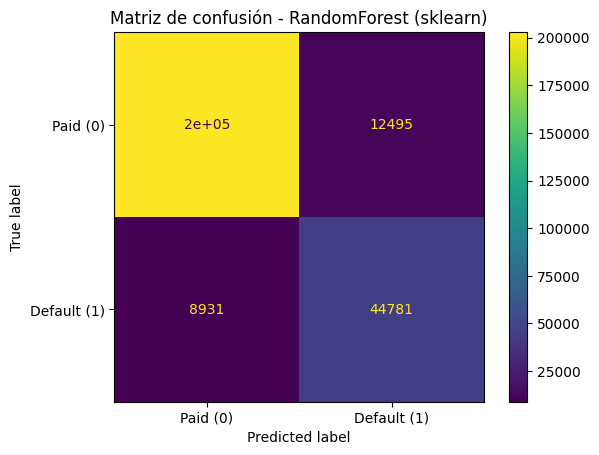
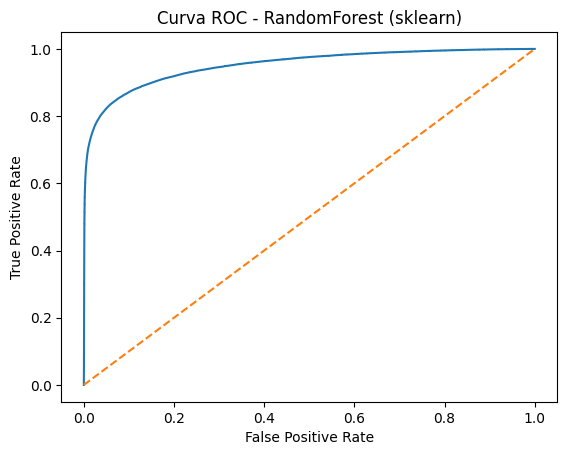

5. Modelado con scikit-learn#
En esta sección se entrena un modelo de clasificación con scikit-learn para predecir default.
Se utiliza RandomForestClassifier y se ajustan hiperparámetros con GridSearchCV.
Se reportan métricas:
Accuracy
Precision
Recall
F1-score
ROC AUC
Matriz de confusión
También se mide el tiempo de entrenamiento y predicción.
import warnings
from sklearn.exceptions import DataConversionWarning
warnings.filterwarnings("ignore", category=UserWarning)
warnings.filterwarnings("ignore", category=DataConversionWarning)
import pandas as pd
import numpy as np
import matplotlib.pyplot as plt
5.1 Carga del dataset y separación de variables#
Se carga el dataset limpio (accepted_clean.csv) y se separa:
X: variables predictorasy: variable objetivo (default)
import pandas as pd
df = pd.read_csv("../data/accepted_clean.csv")
X = df.drop(columns=["default", "loan_status"])
y = df["default"]
print("Shape X:", X.shape)
print("Shape y:", y.shape)
---------------------------------------------------------------------------
FileNotFoundError Traceback (most recent call last)
Cell In[3], line 3
1 import pandas as pd
----> 3 df = pd.read_csv("../data/accepted_clean.csv")
5 X = df.drop(columns=["default", "loan_status"])
6 y = df["default"]
File ~\miniconda3\envs\jb_lending\Lib\site-packages\pandas\io\parsers\readers.py:873, in read_csv(filepath_or_buffer, sep, delimiter, header, names, index_col, usecols, dtype, engine, converters, true_values, false_values, skipinitialspace, skiprows, skipfooter, nrows, na_values, keep_default_na, na_filter, skip_blank_lines, parse_dates, date_format, dayfirst, cache_dates, iterator, chunksize, compression, thousands, decimal, lineterminator, quotechar, quoting, doublequote, escapechar, comment, encoding, encoding_errors, dialect, on_bad_lines, low_memory, memory_map, float_precision, storage_options, dtype_backend)
861 kwds_defaults = _refine_defaults_read(
862 dialect,
863 delimiter,
(...) 869 dtype_backend=dtype_backend,
870 )
871 kwds.update(kwds_defaults)
--> 873 return _read(filepath_or_buffer, kwds)
File ~\miniconda3\envs\jb_lending\Lib\site-packages\pandas\io\parsers\readers.py:300, in _read(filepath_or_buffer, kwds)
297 _validate_names(kwds.get("names", None))
299 # Create the parser.
--> 300 parser = TextFileReader(filepath_or_buffer, **kwds)
302 if chunksize or iterator:
303 return parser
File ~\miniconda3\envs\jb_lending\Lib\site-packages\pandas\io\parsers\readers.py:1645, in TextFileReader.__init__(self, f, engine, **kwds)
1642 self.options["has_index_names"] = kwds["has_index_names"]
1644 self.handles: IOHandles | None = None
-> 1645 self._engine = self._make_engine(f, self.engine)
File ~\miniconda3\envs\jb_lending\Lib\site-packages\pandas\io\parsers\readers.py:1904, in TextFileReader._make_engine(self, f, engine)
1902 if "b" not in mode:
1903 mode += "b"
-> 1904 self.handles = get_handle(
1905 f,
1906 mode,
1907 encoding=self.options.get("encoding", None),
1908 compression=self.options.get("compression", None),
1909 memory_map=self.options.get("memory_map", False),
1910 is_text=is_text,
1911 errors=self.options.get("encoding_errors", "strict"),
1912 storage_options=self.options.get("storage_options", None),
1913 )
1914 assert self.handles is not None
1915 f = self.handles.handle
File ~\miniconda3\envs\jb_lending\Lib\site-packages\pandas\io\common.py:926, in get_handle(path_or_buf, mode, encoding, compression, memory_map, is_text, errors, storage_options)
921 elif isinstance(handle, str):
922 # Check whether the filename is to be opened in binary mode.
923 # Binary mode does not support 'encoding' and 'newline'.
924 if ioargs.encoding and "b" not in ioargs.mode:
925 # Encoding
--> 926 handle = open(
927 handle,
928 ioargs.mode,
929 encoding=ioargs.encoding,
930 errors=errors,
931 newline="",
932 )
933 else:
934 # Binary mode
935 handle = open(handle, ioargs.mode)
FileNotFoundError: [Errno 2] No such file or directory: '../data/accepted_clean.csv'
Se carga el dataset limpio accepted_clean.csv y se separan las variables predictoras X
(150 columnas) de la variable objetivo y (default), sobre un total de 1,345,310 registros.
5.2 División Train/Test#
Se divide el dataset en entrenamiento y prueba (80/20) de forma estratificada para preservar la proporción de clases.
from sklearn.model_selection import train_test_split
X_train, X_test, y_train, y_test = train_test_split(
X, y,
test_size=0.2,
random_state=42,
stratify=y
)
print("Train:", X_train.shape, y_train.shape)
print("Test :", X_test.shape, y_test.shape)
Train: (1076248, 150) (1076248,)
Test : (269062, 150) (269062,)
El dataset se divide en 80% entrenamiento (1,076,248 registros) y 20% prueba
(269,062 registros) con stratify=y, preservando la proporción de clases en ambos
conjuntos y asegurando una evaluación representativa del modelo.
5.3 Preprocesamiento (Pipeline)#
Se construye un pipeline para:
Imputación de nulos (numéricas: mediana, categóricas: moda)
Escalado de numéricas
OneHotEncoder para categóricas
from sklearn.compose import ColumnTransformer
from sklearn.pipeline import Pipeline
from sklearn.preprocessing import StandardScaler, OneHotEncoder
from sklearn.impute import SimpleImputer
numerical_cols = X_train.select_dtypes(include=["int64", "float64"]).columns
categorical_cols = X_train.select_dtypes(include=["object"]).columns
numeric_pipeline = Pipeline([
("imputer", SimpleImputer(strategy="median")),
("scaler", StandardScaler())
])
categorical_pipeline = Pipeline([
("imputer", SimpleImputer(strategy="most_frequent")),
("encoder", OneHotEncoder(handle_unknown="ignore"))
])
preprocessor = ColumnTransformer([
("num", numeric_pipeline, numerical_cols),
("cat", categorical_pipeline, categorical_cols)
])
C:\Users\PC\AppData\Local\Temp\ipykernel_18760\3430104298.py:7: Pandas4Warning: For backward compatibility, 'str' dtypes are included by select_dtypes when 'object' dtype is specified. This behavior is deprecated and will be removed in a future version. Explicitly pass 'str' to `include` to select them, or to `exclude` to remove them and silence this warning.
See https://pandas.pydata.org/docs/user_guide/migration-3-strings.html#string-migration-select-dtypes for details on how to write code that works with pandas 2 and 3.
categorical_cols = X_train.select_dtypes(include=["object"]).columns
El pipeline de preprocesamiento se construye y aplica de forma diferenciada según el tipo de variable, sin producir salida visible. Su configuración se detalla en la sección 4.6.
5.4 Validación cruzada y selección de hiperparámetros#
Para evitar sobreajuste y obtener una estimación robusta del rendimiento del modelo,
se utilizó validación cruzada estratificada dentro de GridSearchCV.
La selección de hiperparámetros se realizó exclusivamente sobre el conjunto de entrenamiento, evitando utilizar el conjunto de prueba durante el proceso de optimización.
Es importante destacar que la validación cruzada no construye un modelo final, sino que
evalúa la capacidad de generalización del algoritmo bajo múltiples particiones de los datos.
El modelo final es reentrenado automáticamente por GridSearchCV utilizando los mejores
hiperparámetros encontrados.
5.4.1 Entrenamiento con RandomForest + GridSearchCV#
Se entrena un RandomForestClassifier y se ajustan hiperparámetros con GridSearchCV:
n_estimators: [10, 50, 100]
max_depth: [5, 10, 15]
Se mide el tiempo total de entrenamiento.
import time
from sklearn.ensemble import RandomForestClassifier
from sklearn.model_selection import GridSearchCV
# Modelo base
rf = RandomForestClassifier(
random_state=42,
n_jobs=-1,
class_weight="balanced"
)
# Pipeline completo (preprocesamiento + modelo)
pipe = Pipeline([
("prep", preprocessor),
("model", rf)
])
# Grid reducido (4 combinaciones en vez de 9)
param_grid = {
"model__n_estimators": [50, 100],
"model__max_depth": [10, 15]
}
# n_jobs=1 para evitar problemas de multiprocessing en Windows
grid = GridSearchCV(
pipe,
param_grid=param_grid,
cv=3,
scoring="f1",
n_jobs=1,
verbose=0
)
t0 = time.time()
grid.fit(X_train, y_train)
train_time = time.time() - t0
print("Mejores hiperparámetros:", grid.best_params_)
print(f"Tiempo entrenamiento (GridSearch): {train_time:.2f} s")
Mejores hiperparámetros: {'model__max_depth': 15, 'model__n_estimators': 100}
Tiempo entrenamiento (GridSearch): 809.76 s
El GridSearchCV evaluó 4 combinaciones de hiperparámetros (n_estimators: [50, 100],
max_depth: [10, 15]) con validación cruzada de 3 folds y métrica de optimización F1-score.
Se utilizó class_weight='balanced' para compensar el desbalance de clases.
Los mejores hiperparámetros encontrados fueron:
max_depth: 15n_estimators: 100
El proceso de búsqueda tomó aproximadamente 809 segundos (~13.5 minutos), lo que refleja el alto costo computacional de entrenar un Random Forest sobre más de un millón de registros.
5.5 Evaluación del modelo en test (métricas)#
Se evalúa el mejor modelo encontrado por GridSearchCV sobre el conjunto de prueba (test).
Métricas reportadas:
Accuracy
Precision
Recall
F1-score
ROC AUC
from sklearn.metrics import (
accuracy_score, precision_score, recall_score, f1_score,
roc_auc_score
)
# Predicciones
y_pred = grid.predict(X_test)
y_proba = grid.predict_proba(X_test)[:, 1]
# Métricas
acc = accuracy_score(y_test, y_pred)
prec = precision_score(y_test, y_pred)
rec = recall_score(y_test, y_pred)
f1 = f1_score(y_test, y_pred)
auc = roc_auc_score(y_test, y_proba)
print("=== MÉTRICAS (RandomForest - sklearn) ===")
print(f"Accuracy : {acc:.4f}")
print(f"Precision: {prec:.4f}")
print(f"Recall : {rec:.4f}")
print(f"F1-score : {f1:.4f}")
print(f"ROC AUC : {auc:.4f}")
=== MÉTRICAS (RandomForest - sklearn) ===
Accuracy : 0.9204
Precision: 0.7818
Recall : 0.8337
F1-score : 0.8070
ROC AUC : 0.9511
El modelo final, evaluado sobre el conjunto de prueba, obtiene los siguientes resultados:
Métrica |
Valor |
|---|---|
Accuracy |
0.9204 |
Precision |
0.7818 |
Recall |
0.8337 |
F1-score |
0.8070 |
ROC AUC |
0.9511 |
El modelo muestra un desempeño sólido. El Recall de 0.8337 indica que detecta correctamente el 83.4% de los casos de default, lo cual es especialmente relevante en el contexto de riesgo crediticio donde los falsos negativos tienen alto costo financiero. El ROC AUC de 0.9511 refleja una excelente capacidad discriminativa entre clases.
5.6 Matriz de confusión#
La matriz de confusión permite observar:
Verdaderos positivos (TP)
Verdaderos negativos (TN)
Falsos positivos (FP)
Falsos negativos (FN)
import matplotlib.pyplot as plt
from sklearn.metrics import confusion_matrix, ConfusionMatrixDisplay
cm = confusion_matrix(y_test, y_pred)
disp = ConfusionMatrixDisplay(
confusion_matrix=cm,
display_labels=["Paid (0)", "Default (1)"]
)
disp.plot()
plt.title("Matriz de confusión - RandomForest (sklearn)")
plt.show()

La matriz de confusión permite desglosar los errores del modelo. Se espera observar
una proporción de Falsos Negativos (defaults no detectados) reducida gracias al
uso de class_weight='balanced' y al alto Recall alcanzado, aunque a costa de algunos
Falsos Positivos (clientes buenos clasificados como default).
5.7 Curva ROC#
Se grafica la curva ROC para evaluar la capacidad discriminativa del modelo. El AUC (área bajo la curva) se reporta como medida global de desempeño.
from sklearn.metrics import roc_curve
fpr, tpr, thresholds = roc_curve(y_test, y_proba)
plt.plot(fpr, tpr)
plt.plot([0, 1], [0, 1], linestyle="--")
plt.title("Curva ROC - RandomForest (sklearn)")
plt.xlabel("False Positive Rate")
plt.ylabel("True Positive Rate")
plt.ylabel("True Positive Rate")
plt.show()

La curva ROC se aleja notablemente de la diagonal (clasificador aleatorio), confirmando la alta capacidad discriminativa del modelo. El AUC de 0.9511 indica que el modelo tiene una probabilidad del 95.1% de clasificar correctamente un par aleatorio de instancias (una de cada clase), lo que constituye un resultado excelente para este problema.
5.8 Tabla resumen de resultados (sklearn)#
Se almacena un resumen con las métricas y tiempos obtenidos para comparar posteriormente con PySpark.
import pandas as pd
results_sklearn = pd.DataFrame([{
"model": "RandomForest (sklearn)",
"accuracy": acc,
"precision": prec,
"recall": rec,
"f1": f1,
"roc_auc": auc,
"train_time_s": train_time,
"best_params": str(grid.best_params_)
}])
results_sklearn
| model | accuracy | precision | recall | f1 | roc_auc | train_time_s | best_params | |
|---|---|---|---|---|---|---|---|---|
| 0 | RandomForest (sklearn) | 0.920368 | 0.781846 | 0.833724 | 0.806952 | 0.95111 | 847.036006 | {'model__max_depth': 15, 'model__n_estimators'... |
Se consolidan los resultados del modelo en una tabla resumen para facilitar la comparación
posterior con la implementación en PySpark. El mejor estimador obtenido por GridSearchCV
se persiste en disco (models/rf_model.pkl) mediante joblib para su reutilización sin
necesidad de reentrenamiento.
Modelo |
Accuracy |
Precision |
Recall |
F1 |
ROC AUC |
Tiempo (s) |
Mejores parámetros |
|---|---|---|---|---|---|---|---|
RandomForest (sklearn) |
0.9204 |
0.7818 |
0.8337 |
0.8070 |
0.9511 |
847 |
max_depth=15, n_estimators=100 |
import os
import joblib
# Crear carpeta models si no existe
os.makedirs("models", exist_ok=True)
# Guardar el mejor modelo del GridSearch
joblib.dump(grid.best_estimator_, "models/rf_model.pkl")
print("Modelo guardado correctamente en models/rf_model.pkl")
Modelo guardado correctamente en models/rf_model.pkl